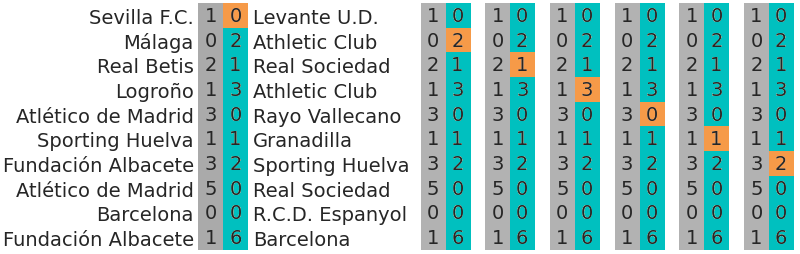
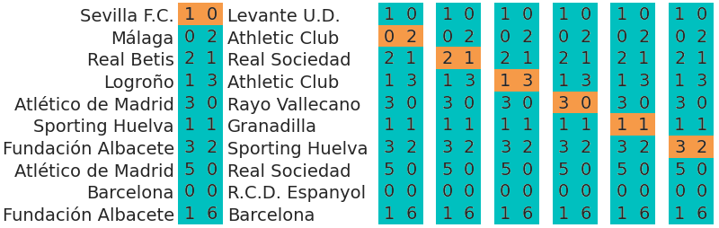
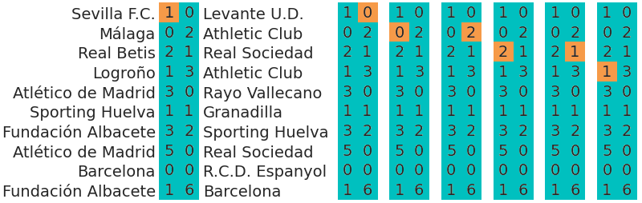
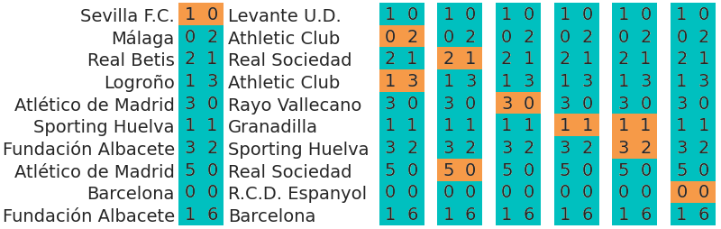

import arviz.data.datasets as azd
azd.REMOTE_DATASETS.update({
"laliga_base": azd.RemoteFileMetadata(
name="laliga_base",
filename="base_model.nc",
url="http://figshare.com/ndownloader/files/44240747",
checksum="6f39f2646bbef8259f0d8fa3c6d7f6304b9cf6d63f5df7cdae1e6b3a93094fda",
description="""Base model for the analysis of LaLiga 2022-2023 results."""
),
"laliga_budget": azd.RemoteFileMetadata(
name="laliga_budget",
filename="budget_model.nc",
url="http://figshare.com/ndownloader/files/44240762",
checksum="5c77671b98bcf2ae30d45a7ab3fd47b855e285ffe15ce2cd176ca25b1fd369fd",
description="""Budget model for the analysis of LaLiga 2022-2023 results."""
),
"laliga_nofield": azd.RemoteFileMetadata(
name="laliga_nofield",
filename="nofield_model.nc",
url="http://figshare.com/ndownloader/files/44240807",
checksum="3e4910690cb2d8428e6486ba9973921d1b195bb8f14e2136422a0fc5d953d8e8",
description="""No field effect model for the analysis of LaLiga 2022-2023 results."""
)
})8 Model Comparison (case study)
8.1 Information criteria for hierarchical and multi-likelihood models
There are many situations where one model can be used for several prediction tasks at the same time. Hierarchical models or models with multiple observations are examples of such cases. With two observations for example, the same model can be used to predict only the first observation, only the second or both observations at the same time.
Before estimating the predictive accuracy, there are two important questions to answer: what is the predictive task we are interested in and, whether or not the exchangeability criteria is met. This section will show several alternative ways to define the predictive task using the same model.
We are going to analyze data from the 2022-2023 season of Spain’s highest men’s football league. In this notebook, we will start from InferenceData files, but the model and data used is also described because they are key to understanding what is going on. If you are interested in the model itself in more depth, or the coding of the models themselves, refer to TODO.
8.2 The data
The data used to fit the models are the results of all matches from 2022-2023 and the budget of each team (for the 2nd model only). Our data therefore consists of two tables: one with one row per match, containing the home and away teams and the goals scored by each; another with one row per team, containing the team and its budget.
8.3 Base model
The model used is taken from this blog post which was added as an example notebook to PyMC docs.
We are trying to model a league in which all teams play against each other twice. We indicate the number of goals scored by the home and the away team in the \(m\)-th match of the season (\(M\) matches) as \(y_{m,h}\) and \(y_{m,a}\) respectively. The model assumes the goals scored by a team follow a Poisson distribution:
\[y_{m,f} | \theta_{m,f} \sim \text{Poiss}(\theta_{m,f})\]
where \(f = {h, a}\) indicates the field, representing either home or away team. We will therefore start with a model containing two observation vectors: \(\mathbf{y_h} = (y_{1,h}, y_{2,h}, \dots, y_{M,h})\) and \(\mathbf{y_a} = (y_{1,a}, \dots, y_{M,a})\). In order to take into account each team’s scoring and defensive power and also the advantage of playing home, we will use different formulas for \(\theta_{m,h}\) and for \(\theta_{m,a}\):
\[ \begin{align} \theta_{m,h} &= \alpha + home + atts_{home\_team} + defs_{away\_team}\\ \theta_{m,a} &= \alpha + atts_{away\_team} + defs_{home\_team} \end{align} \]
The expected number of goals score by the home team \(\theta_{m,h}\) depends on an intercept (\(\alpha\)), \(home\) to quantify the home advantage, on the attacking power of the home team and on the defensive power of the away team. Similarly, the expected number of goals score by the away team \(\theta_{m,a}\) also depends on the intercept but not on the home advantage, and now, consequently, we use the attacking power of the away team and the defensive power of the home team.
Summing up and including the priors, our base model is the following one:
\[ \begin{align} \alpha &\sim \text{Normal}(0,5) \qquad &\text{scalar} \\ home &\sim \text{Normal}(0,5) \qquad &\text{scalar} \\ sd_{att} &\sim \text{HalfStudentT}(3,2.5) \qquad &\text{scalar} \\ sd_{def} &\sim \text{HalfStudentT}(3,2.5) \qquad &\text{scalar} \\ atts_* &\sim \text{Normal}(0,sd_{att}) \qquad &\text{shape (T,)} \\ defs_* &\sim \text{Normal}(0,sd_{def}) \qquad &\text{shape (T,)} \\ atts &= atts_* - \text{mean}(atts_*) \qquad &\text{shape (T,)} \\ defs &= defs_* - \text{mean}(defs_*) \qquad &\text{shape (T,)} \\ \mathbf{y}_h &\sim \text{Poiss}(\theta_h) \qquad &\text{shape (M,)} \\ \mathbf{y}_a &\sim \text{Poiss}(\theta_a) \qquad &\text{shape (M,)} \end{align} \]
where \(\theta_j\) has been defined above.
8.4 Budget model
The budget model only represents a slight variation on the base model, adding two new parameters and modifying \(atts\) and \(defs\) variables:
\[ \begin{align} budget_{att} &\sim \text{Normal}(0,5) \qquad &\text{scalar} \\ budget_{def} &\sim \text{Normal}(0,5) \qquad &\text{scalar} \\ atts &= atts_* - \text{mean}(atts_*) + budget_{att} \log{\mathbf{b}} \qquad &\text{shape (T,)} \\ defs &= defs_* - \text{mean}(defs_*) + budget_{def} \log{\mathbf{b}} \qquad &\text{shape (T,)} \\ \end{align} \]
with \(\mathbf{b} = (b_1, b_2, \dots, b_T)\) the budgets of each team.
8.5 No field effect model
This third model is another variation on the base model, where we remove the \(home\) variable. Thus, the \(\theta\) variables become:
\[ \begin{align} \theta_{m,h} &= \alpha + atts_{home\_team} + defs_{away\_team}\\ \theta_{m,a} &= \alpha + atts_{away\_team} + defs_{home\_team} \end{align} \]
8.6 Variable and index glossary
- Matches. The total number of matches in the season, 380. \(M\) denotes the total, and we use \(m\) as the index going from \(1\) to \(M\).
- Teams. The number of teams in the league, 20. \(T\) denotes the total, and we use \(t\) as the index going from \(1\) to \(T\).
- Field. The field identifier. Two teams play in each game, one being the home team, the other the away one. We use \(f\) as the index indicating the field, which can take only two values \(h\) or \(a\).
- Arbitrary index. For theoretical concepts, we use \(i\) to indicate an arbitrary index.
8.7 Information criterion calculation
Due to the presence of the two likelihoods in our model, we cannot call az.loo or az.waic straight away because the predictive task to evaluate is ambiguous. The calculation of information criteria requires pointwise likelihood values, \(p(y_i|\theta)\) with \(y_i\) indicating observation \(i\)-th and \(\theta\) representing all the parameters in the model. We need to define \(y_i\), what does one observation represent in our model.
As we were introducing above, this model alone can tackle several predictive tasks. These predictive tasks can be identified by the definition of one observation which at the same time defines how are pointwise likelihood values to be calculated. Here are some examples:
- We could be a group of students supporting different teams with budget to travel only to one away match of our respective teams. We may want to travel to the match where our team will score the most goals (while being the away team and also independently of the winner of the match). We will therefore assess the predictive accuracy of our model using only \(\mathbf{y}_a\).
- We could also be football fans without any clear allegiance who love an intense match between two teams of similar strength. Based on previous experience, we may consider matches that end up 3-3 or 4-4 the ones that better fit our football taste. Now we need to assess the predictive accuracy using the result of the whole match.
- Even another alternative would be wanting to be present at the match where a single team scores the most goals. In this situation, we would have to put both home and away goals in the same bag and assess the predictive accuracy on the ability to predict values from this bag, we may call the observations in this hypothetical bag “number of goals scored per match and per team”.
There are even more examples of predictive tasks where this particular model can be of use. However, it is important to keep in mind that this model predicts the number of goals scored. Its results can be used to estimate probabilities of victory and other derived quantities, but calculating the likelihood of these derived quantities may not be straightforward. And as you can see above, there isn’t one unique predictive task: it all depends on the specific question you’re interested in. As often in statistics, the answer to these questions lies outside the model, you must tell the model what to do, not the other way around.
Even though we know that the predictive task is ambiguous, we will start trying to calculate az.loo with idata_base and then work on the examples above and a couple more to show how would this kind of tasks be performed with ArviZ. But before that, let’s see what ArviZ says when you naively ask it for the LOO of a multi-likelihood model:
TypeError: Found several log likelihood arrays ['home_goals', 'away_goals'], var_name cannot be NoneAs expected, ArviZ has no way of knowing what predictive task we have in mind so it raises an error.
8.7.1 Predicting the goals scored by the away team
In this particular case, we are interested in predicting the goals scored by the away team. We will still use the goals scored by the home team, but won’t take them into account when assessing the predictive accuracy. Below there is an illustration of how would cross validation be performed to assess the predictive accuracy in this particular case:

This can also be seen from a mathematical point of view. We can write the pointwise log likelihood in the following way so it defines the predictive task at hand:
\[ p(y_i|\theta) = p(y_{i,h}|\theta_{i,h}) = \text{Poiss}(y_{i,h}; \theta_{i,h}) \]
with \(i\) being both the match indicator (\(m\), which varies with \(i\)) and the field indicator (\(f\), here always fixed at \(h\)). These are precisely the values stored in the home_goals of the log_likelihood group of idata_base.
We can tell ArviZ to use these values using the argument var_name.
Computed from 8000 posterior samples and 380 observations log-likelihood matrix.
Estimate SE
elpd_loo -568.55 12.66
p_loo 15.59 -
------
Pareto k diagnostic values:
Count Pct.
(-Inf, 0.70] (good) 380 100.0%
(0.70, 1] (bad) 0 0.0%
(1, Inf) (very bad) 0 0.0%| rank | elpd_loo | p_loo | elpd_diff | weight | se | dse | warning | scale | |
|---|---|---|---|---|---|---|---|---|---|
| budget | 0 | -567.057532 | 10.716592 | 0.000000 | 0.715937 | 13.055752 | 0.000000 | False | log |
| base | 1 | -568.553182 | 15.589902 | 1.495650 | 0.284063 | 12.661187 | 2.767823 | False | log |
| nofield | 2 | -574.119733 | 15.814319 | 7.062202 | 0.000000 | 15.312384 | 4.387979 | False | log |
| rank | elpd_loo | p_loo | elpd_diff | weight | se | dse | warning | scale | |
|---|---|---|---|---|---|---|---|---|---|
| budget | 0 | -480.386626 | 6.888639 | 0.000000 | 1.000000e+00 | 11.546581 | 0.000000 | False | log |
| base | 1 | -482.936745 | 10.241680 | 2.550119 | 2.781109e-14 | 11.831405 | 1.943906 | False | log |
| nofield | 2 | -488.971732 | 10.193199 | 8.585106 | 0.000000e+00 | 9.456310 | 3.420849 | False | log |
8.7.2 Predicting the outcome of a match
Another option is being interested in the outcome of the matches. In our current model, the outcome of a match is not who wins or the aggregate of scored goals by both teams, the outcome is the goals scored by the home team and by the away team, both quantities at the same time. Below there is an illustration on how would cross validation be used to assess the predictive accuracy in this situation:

The one observation in this situation is therefore a vector with two components: \(y_i = (y_{i,h}, y_{i,a})\). Like above, we also have \(M\) observations. The pointwise likelihood is therefore a product:
\[ p(y_i|\theta) = p(y_{i,h}|\theta_{i,h})p(y_{i,a}|\theta_{i,a}) = \text{Poiss}(y_{i,h}; \theta_{i,h})\text{Poiss}(y_{i,a}; \theta_{i,a}) \]
with \(i\) being equal to the match indicator \(m\). Therefore, we have \(M\) observations like in the previous example, but each observation has two components.
We can calculate the product as a sum of logarithms and store the result in a new variable inside the log_likelihood group.
def match_lik(idata):
log_lik = idata.log_likelihood
log_lik["matches"] = log_lik.home_goals + log_lik.away_goals
return idata
base_idata = match_lik(base_idata)
budget_idata = match_lik(budget_idata)
nofield_idata = match_lik(nofield_idata)
az.loo(base_idata, var_name="matches")Computed from 8000 posterior samples and 380 observations log-likelihood matrix.
Estimate SE
elpd_loo -1051.48 16.93
p_loo 25.81 -
------
Pareto k diagnostic values:
Count Pct.
(-Inf, 0.70] (good) 380 100.0%
(0.70, 1] (bad) 0 0.0%
(1, Inf) (very bad) 0 0.0%| rank | elpd_loo | p_loo | elpd_diff | weight | se | dse | warning | scale | |
|---|---|---|---|---|---|---|---|---|---|
| budget | 0 | -1047.441755 | 17.606963 | 0.000000 | 0.84896 | 17.072842 | 0.000000 | False | log |
| base | 1 | -1051.475361 | 25.812936 | 4.033606 | 0.15104 | 16.927232 | 3.399485 | False | log |
| nofield | 2 | -1063.093483 | 26.019985 | 15.651728 | 0.00000 | 17.563750 | 5.491706 | False | log |
8.7.3 Predicting the goals scored per match and per team
Another example described above is being interested in the scored goals per match and per team. In this situation, our observations are a scalar once again.

The expression of the likelihood is basically the same as the one in the first example (both cases are scalars), but the difference is in the index, but that does not make it less significant:
\[ p(y_i|\theta) = p(y_{i}|\theta_{i}) = \text{Poiss}(y_{i}; \theta_{i}) \]
with \(i\) being both the match indicator \(m\) and the field indicator \(f\), both varying with \(i\). Now, we will consider \(i\) as an index iterating over the values in
\[\big\{(1,h), (2,h), \dots, (M-1,h), (M,h), (1,a), (2,a) \dots (M-1,a), (M,a)\big\}\]
Therefore, unlike in previous cases, we have \(2M\) observations.
We can obtain the pointwise log likelihood corresponding to this case by concatenating the pointwise log likelihoods of home_goals and away_goals. Then, like in the previous case, store the result in a new variable inside the log_likelihood group.
def goals_lik(idata):
log_lik = idata.log_likelihood
log_lik["goals"] = xr.concat((log_lik.home_goals, log_lik.away_goals), "match").rename({"match": "goal"})
return idata
base_idata = goals_lik(base_idata)
budget_idata = goals_lik(budget_idata)
nofield_idata = goals_lik(nofield_idata)
az.loo(base_idata, var_name="goals")Computed from 8000 posterior samples and 760 observations log-likelihood matrix.
Estimate SE
elpd_loo -1051.49 17.60
p_loo 25.83 -
------
Pareto k diagnostic values:
Count Pct.
(-Inf, 0.70] (good) 760 100.0%
(0.70, 1] (bad) 0 0.0%
(1, Inf) (very bad) 0 0.0%| rank | elpd_loo | p_loo | elpd_diff | weight | se | dse | warning | scale | |
|---|---|---|---|---|---|---|---|---|---|
| budget | 0 | -1047.444158 | 17.605232 | 0.000000 | 8.519505e-01 | 17.710455 | 0.000000 | False | log |
| base | 1 | -1051.489927 | 25.831582 | 4.045769 | 1.480495e-01 | 17.604908 | 3.382467 | False | log |
| nofield | 2 | -1063.091466 | 26.007518 | 15.647308 | 9.992007e-16 | 18.260083 | 5.564137 | False | log |
8.7.4 Predicting team level performance
The last example covered here is estimating the predictive accuracy at group level. This can be useful to assess the accuracy of predicting the whole season of a new team. In addition, this can also be used to evaluate the hierarchical part of the model.
Although theoretically possible, importance sampling tends to fail at the group level due to all the observations being too informative. See this post for more details.
In this situation, we could describe the cross validation as excluding a team. When we exclude a team, we will exclude all the matches played by the team, not only the goals scored by the team but the whole match. Here is the illustration:

In the first column, we are excluding “Levante U.D.” which in the rows shown only appears once. In the second one, we are excluding “Athletic Club” which appears two times. This goes on following the order of appearance in the away team column.
def team_lik(idata):
log_lik = idata.log_likelihood
const = idata.constant_data
groupby_sum_home = log_lik.groupby(const.home_team).sum().rename({"home_team": "team"})
groupby_sum_away = log_lik.groupby(const.away_team).sum().rename({"away_team": "team"})
log_lik["teams_match"] = (
groupby_sum_home.home_goals + groupby_sum_home.away_goals +
groupby_sum_away.home_goals + groupby_sum_away.away_goals
)
return idata
base_idata = team_lik(base_idata)
budget_idata = team_lik(budget_idata)
nofield_idata = team_lik(nofield_idata)/opt/hostedtoolcache/Python/3.11.12/x64/lib/python3.11/site-packages/arviz/stats/stats.py:797: UserWarning: Estimated shape parameter of Pareto distribution is greater than 0.70 for one or more samples. You should consider using a more robust model, this is because importance sampling is less likely to work well if the marginal posterior and LOO posterior are very different. This is more likely to happen with a non-robust model and highly influential observations.
warnings.warn(Computed from 8000 posterior samples and 20 observations log-likelihood matrix.
Estimate SE
elpd_loo -2109.44 19.91
p_loo 52.62 -
There has been a warning during the calculation. Please check the results.
------
Pareto k diagnostic values:
Count Pct.
(-Inf, 0.70] (good) 3 15.0%
(0.70, 1] (bad) 14 70.0%
(1, Inf) (very bad) 3 15.0%TODO: it would probably be best to run reloo for the three models for this case and include that on figshare too.
/opt/hostedtoolcache/Python/3.11.12/x64/lib/python3.11/site-packages/arviz/stats/stats.py:797: UserWarning: Estimated shape parameter of Pareto distribution is greater than 0.70 for one or more samples. You should consider using a more robust model, this is because importance sampling is less likely to work well if the marginal posterior and LOO posterior are very different. This is more likely to happen with a non-robust model and highly influential observations.
warnings.warn(
/opt/hostedtoolcache/Python/3.11.12/x64/lib/python3.11/site-packages/arviz/stats/stats.py:797: UserWarning: Estimated shape parameter of Pareto distribution is greater than 0.70 for one or more samples. You should consider using a more robust model, this is because importance sampling is less likely to work well if the marginal posterior and LOO posterior are very different. This is more likely to happen with a non-robust model and highly influential observations.
warnings.warn(
/opt/hostedtoolcache/Python/3.11.12/x64/lib/python3.11/site-packages/arviz/stats/stats.py:797: UserWarning: Estimated shape parameter of Pareto distribution is greater than 0.70 for one or more samples. You should consider using a more robust model, this is because importance sampling is less likely to work well if the marginal posterior and LOO posterior are very different. This is more likely to happen with a non-robust model and highly influential observations.
warnings.warn(| rank | elpd_loo | p_loo | elpd_diff | weight | se | dse | warning | scale | |
|---|---|---|---|---|---|---|---|---|---|
| budget | 0 | -2098.768712 | 36.970533 | 0.000000 | 8.019749e-01 | 22.754832 | 0.000000 | True | log |
| base | 1 | -2109.444812 | 52.616593 | 10.676101 | 1.980251e-01 | 19.908256 | 6.769330 | True | log |
| nofield | 2 | -2133.223518 | 52.665911 | 34.454806 | 2.220446e-16 | 20.286200 | 9.252461 | True | log |